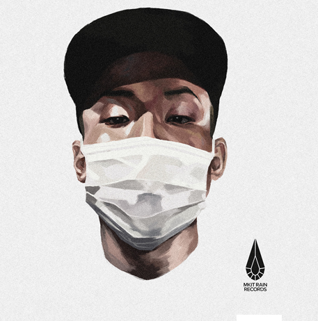

2015년 최고의 루키 중 한 명 나플라와 더불어 한국 힙합 내의 LA씬 입지를 한단계 끌어올린 인물 미국 로스앤젤레스에서 활동 중인 한국계 MC. Gear 2 (Live) 영상과 믹스테입 King Loopy가 많은 힙합 커뮤니티에서 주목받은 바 있다. 특히 Gear 2 영상이 페이스북, 각종 힙합 커뮤니티에 회자가 되며 바로 주목받는 루키로 진입하였다. 개ㅐ특유의 박자감과 영상을 통해 보여주는 독특한 이미지로 후에 나플라, 42와 함께 "엘에이 한인 힙합"을 힙합 팬들에게 알렸다.
